import Section from "~/components/Section";
import Paragraph from "~/components/Paragraph";
import Container from "~/components/Container";
import Carousel from "~/components/Carousel";
import NumberedTitle from "~/components/NumberedTitle";
const Article = () => {
  return (
    <Container>
      <Section
        count={33}
        title_gr="LR-Parser per Hand entwerfen"
        title_en="a LR parsing by hand"
        number={5.5}
        counter="DefCtr"
        counter="ExoCtr"
        path="/lecture-notes33.tsx">
        <div id="link-to-toc">
          <a href="../vorlesungsskript">
            Inhaltsverzeichnis
          </a>
          <a href="05-04-LL1-grammars">
            &lt;&lt; Kapitel 5.4
          </a>
        </div>
        <div
          id="link-to-overview"
          style="text-align: end">
          <a href="/">
            zur Kursübersicht
          </a>
          <a href="05-06-b-Parser-in-Java">
            Kapitel 5.6 &gt;&gt;
          </a>
        </div>
        <div id="rightSideWrapper">
          <div class="content">
            <div class="chapter">
              <div class="subChapter">
                <h1 class="hidden-title">
                  <span class="subChapterTitle">
                    5.5 
                    LR-Parser per Hand entwerfen
                  </span>
                </h1>
                <Paragraph>
                  Betrachten wir die kontextfreie Grammatik \(G\) für arithmetische Ausdrücke mit den
                  Variablen \(x, y, z\) und strenger Klammerung über dem Alphabet
                  \(\Sigma = \&#123;x, y, z, (, ), +, *\&#125;\):
                </Paragraph>
                $$\begin&#123;align*&#125;
                S&amp;\rightarrow x \ |\ y\ |\ z \\
                S&amp;\rightarrow (S+S) \\
                S&amp;\rightarrow (S*S)
                \end&#123;align*&#125;$$
                <Paragraph>
                  Sie kann also \((x + (y*z))\) ableiten aber eben nicht \((x + y + z)\). Wie können wir nun einen
                  Parser für \(G\) schreiben? Also einen Algorithmus, der ein Wort \(w \in \Sigma^*\) nimmt und einen
                  Ableitungsbaum konstruiert (falls \(w \in L(G)\))?
                  Wenn wir uns an das LL-Paradigma halten und eine Linksableitung bauen wollen, dann stoßen wir
                  schon ganz am Anfang auf ein Problem: wenn zum Beispiel
                </Paragraph>
                $$\begin&#123;align*&#125;
                w = ((((\dots
                \end&#123;align*&#125;$$
                <Paragraph>
                  dann wissen wir nicht, ob wir als ersten Schritt \(S \rightarrow (S+S)\) oder \(S \rightarrow
                  (S*S)\) tätigen sollen. Das geht auch nicht, wenn wir \(k\) Zeichen vorauslesen dürfen, weil
                  der \((((\dots\)-Präfix ja länger als \(k\) sein kann. Nein, wir müssen anders vorgehen.
                  Wir könnten beispielsweise die Grammatik ändern:
                </Paragraph>
                $$\begin&#123;align*&#125;
                S&amp;\rightarrow x \ | \ y \ | \ z \\
                S&amp;\rightarrow (SOS) \\
                O&amp;\rightarrow + \ | \ *
                \end&#123;align*&#125;$$
                <Paragraph>
                  Das geht aber nicht immer:
                </Paragraph>
                <div
                  id="example-more-a-than-b"
                  class="well container theorem">
                  <Paragraph>
                    <span class="numbered-title">
                      Beispiel
                      <NumberedTitle>
                        &ensp;5.5.1{" "}
                      </NumberedTitle>
                    </span>
                    &ensp;Betrachten wir die recht einfache Sprache{" "}
                  </Paragraph>
                  $$\begin&#123;align*&#125;
                  L_2 := \&#123;a^&#123;m+k&#125; b^m c \ | \ m \geq 1, k \geq 0 \&#125; \ ,
                  \end&#123;align*&#125;$$
                  <Paragraph>
                    also{" "}
                    <i>
                      beliebig viele \(a\)'s, gefolgt von gleich vielen oder weniger \(b\)'s (aber mindestens
                      einem), abgeschlossen
                      mit einem \(c\)
                    </i>
                    . Eine
                    Grammatik ist schnell geschrieben:
                  </Paragraph>
                  $$\begin&#123;align*&#125;
                  S&amp;\rightarrow aS \\
                  S&amp;\rightarrow Xc \\
                  X&amp;\rightarrow aXb \\
                  X&amp;\rightarrow ab
                  \end&#123;align*&#125;$$
                  <Paragraph>
                    Wenn wir jetzt die ersten \(k\) Zeichen lesen: \(aaaa \dots\), dann
                    gibt es keinen Weg, zu entscheiden, ob danach gleich viele oder weniger
                    \(b\)'s folgen werden, ob wir also \(S \rightarrow sS\) oder \(S \rightarrow Xc\) anwenden sollen.
                    Das lässt sich auch nicht durch Umschreiben der Grammatik lösen. Wir müssen
                    lesen, bis wir ein \(b\) sehen.
                  </Paragraph>
                </div>
                <h2>
                  Das LR-Paradigma
                </h2>
                <Paragraph>
                  Wir brauchen einen Paradigmenwechsel. Das LL-Paradigma war ja, mit \(S\) zu starten und,
                  geleitet von den nächsten \(k\) Zeichen, zu entscheiden, welche Ableitungsregel als nächstes
                  anzuwenden ist. Hierbei haben wir immer versucht, für das am weitesten
                  links stehende Nichtterminal eine Regel zu finden. Wir beschreiben nun ein ganz anderes
                  Vorgehen: wir lesen das Eingabewort \(v\) von links nach rechts, unterhalten also
                  einen{" "}
                  <i>
                    Stack
                  </i>
                  , auf dem ein Präfix \(\gamma\) von \(v\) liegt,
                  bis wir am rechten Ende die rechte Seite einer Produktionsregel erkennen - bis also
                  \(\gamma = \alpha \beta\) und es eine Produktion \(X \rightarrow \beta\) gibt. Dann ersetzen
                  wir \(\alpha \beta\) durch \(\alpha X\).
                  Unser Stack enthält nun keine Präfix von \(v\) mehr, sondern eine Wortform \(\gamma\).
                  Zusammen mit dem ungelesenen Teil \(w\) des Eingabewortes ergibt das eine
                  Wortform \(\gamma w\). Solange es eine Rechtsableitung
                  \(S \Pets&#123;&#125; \gamma w \Pets&#123;&#125; v\) gibt, sind wir auf dem richtigen Weg.
                  Am Besten betrachten wir ein Beispiel für
                  \(L_2 = \&#123;a^&#123;m+k&#125; b^m c \ | \ m \geq 1, k \geq 0\&#125;\). Die Farbe grau bedeutet
                  hier, dass wir das Eingabezeichen noch nicht gelesen haben.
                </Paragraph>
                <figure class="centered-figure well container">
                  <Carousel>
                    
                    
                    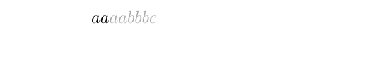
                    
                    
                    
                    
                    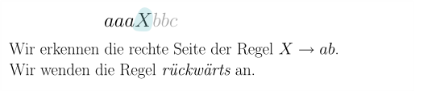
                    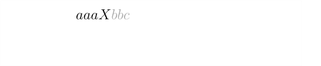
                    
                    
                    
                    
                    
                    
                    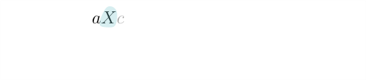
                    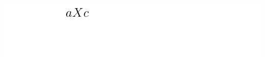
                    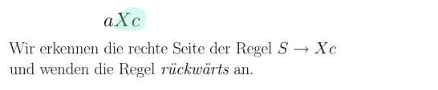
                    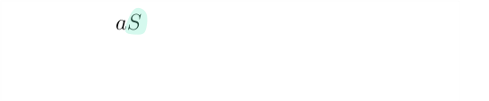
                    
                    
                    
                    
                  </Carousel>
                </figure>
                <Paragraph>
                  Betrachten wir noch ein Beispiel, nun für die etwas nützlichere Grammatik
                  der streng geklammerten arithmetischen Ausdrücke.
                </Paragraph>
                <figure class="centered-figure well container">
                  <Carousel>
                    
                    
                    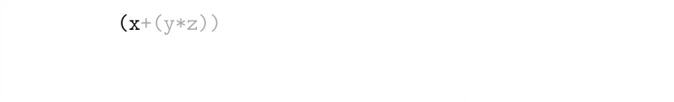
                    
                    
                    
                    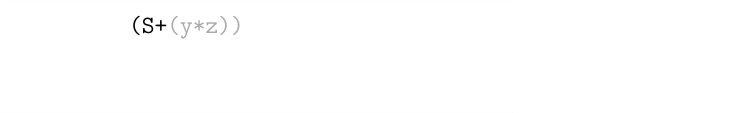
                    
                    
                    
                    
                    
                    
                    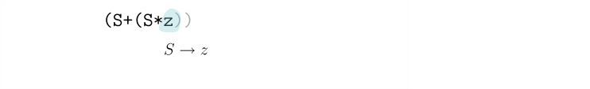
                    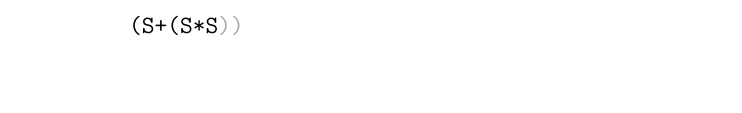
                    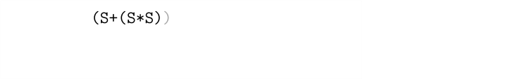
                    
                    
                    
                    
                    
                    
                  </Carousel>
                </figure>
                <Paragraph>
                  Wenn wir uns nun die Ableitung ansehen, die wir gefunden haben:
                </Paragraph>
                $$\begin&#123;align*&#125;
                \texttt&#123;S&#125; \Step&#123;&#125;
                \texttt&#123;(S+S)&#125; \Step&#123;&#125;
                \texttt&#123;(S+(S*S))&#125; \Step&#123;&#125;
                \texttt&#123;(S+(S*z))&#125; \Step&#123;&#125;
                \texttt&#123;(S+(y*z))&#125; \Step&#123;&#125;
                \texttt&#123;(x+(y*z))&#125;
                \end&#123;align*&#125;$$
                <Paragraph>
                  dann sehen wir, dass es sich um eine Rechtsableitung handelt. Daher der Name LR-Parsing: wir
                  beginnen links (daher das L) und suchen eine Rechtsableitung (daher das R), allerdings in
                  umgekehrter
                  Reihenfolge. Statt von \(S\) ausgehend \(w\) abzuleiten, also \(S \Step&#123;&#125;^* w\), versuchen
                  wir \(w\) zu \(S\) zu{" "}
                  <i>
                    reduzieren
                  </i>
                  , also \(w \Pets&#123;&#125;^* S\).
                  Allerdings ist das nicht immer so einfach: manchmal ist nicht auf den ersten Blick erkennbar,
                  welche Produktionsregel wir (rückwärts) anwenden sollen. Hier ein etwas konstruiertes Beispiel:
                </Paragraph>
                $$\begin&#123;align*&#125;
                S&amp;\rightarrow XYz \\
                X&amp;\rightarrow aXa \ | \ bXb \ | \ c \\
                Y&amp;\rightarrow Ya \ | \ Yb \ | \ a \ | \ b
                \end&#123;align*&#125;$$
                <Paragraph>
                  Die erzeugte Sprache ist{" "}
                </Paragraph>
                $$\begin&#123;align*&#125;
                L(G) = \&#123;vcv^Rwz \ | \ v, w \in \&#123;a,b\&#125;^* \&#125;
                \end&#123;align*&#125;$$
                <Paragraph>
                  Betrachten wir das Eingabewort \(acaba\). Wir schreiben nun immer
                  den bis jetzt gelesenen / geparsten Teil des Wortes, gefolgt von dem
                  ungelesen Teil in grau und dahinter
                  in Klammern ,
                  was wir als nächstes tun, also das nächste Zeichen lesen oder eine
                  Regel anwenden.
                </Paragraph>
                <div class="container">
                  $$\begin&#123;align*&#125;
                  &amp;\textcolor&#123;darkgray&#125;&#123;acabaz&#125; \tag&#123;lesen&#125; \\
                  &amp;a\textcolor&#123;darkgray&#125;&#123;cabaz&#125; \tag&#123;lesen&#125; \\
                  &amp;ac\textcolor&#123;darkgray&#125;&#123;abaz&#125; \tag&#123;reduzieren per $X \rightarrow c$&#125; \\
                  &amp;aX\textcolor&#123;darkgray&#125;&#123;abaz&#125; \tag&#123;lesen&#125; \\
                  &amp;aXa\textcolor&#123;darkgray&#125;&#123;baz&#125; \tag&#123;reduzieren per $X \rightarrow aXa$&#125; \\
                  &amp;X\textcolor&#123;darkgray&#125;&#123;baz&#125; \tag&#123;lesen&#125; \\
                  &amp;Xb\textcolor&#123;darkgray&#125;&#123;baz&#125; \tag&#123;reduzieren per $Y \rightarrow b$&#125; \\
                  &amp;XY\textcolor&#123;darkgray&#125;&#123;az&#125; \tag&#123;lesen&#125; \\
                  &amp;XYa\textcolor&#123;darkgray&#125;&#123;z&#125; \tag&#123;reduzieren per $Y \rightarrow Ya$&#125; \\
                  &amp;XY\textcolor&#123;darkgray&#125;&#123;z&#125; \tag&#123;lesen&#125; \\
                  &amp;XYz \tag&#123;reduzieren per $S \rightarrow XYz$&#125; \\
                  &amp;S \tag&#123;fertig&#125;
                  \end&#123;align*&#125;$$
                </div>
                <Paragraph>
                  Es stellen sich einige Fragen: woher wissen wir zum Beispiel bei
                  \(XYa\textcolor&#123;darkgray&#125;&#123;z&#125;\), dass wir per \(Y \rightarrow Ya\) reduzieren müssen
                  und nicht per \(Y \rightarrow a\)? Wir könnten ja auch auf
                  \(XYa \Pets&#123;&#125; XYY\) reduzieren. Oder in Schritt 2, bei
                  \(a\textcolor&#123;darkgray&#125;&#123;cabaz&#125;\). Da könnten wir ja
                  gleich \(a \Pets&#123;&#125; Y\) reduzieren.
                </Paragraph>
                <div class="well container theorem">
                  <Paragraph>
                    <span class="numbered-title">
                      Beobachtung
                      <NumberedTitle>
                        &ensp;5.5.2{" "}
                      </NumberedTitle>
                      .
                    </span>
                    &ensp;Die Reduktion
                    \(XYa \Pets&#123;&#125; XYY\) kann nicht richtig sein, weil \(XYY\) nie als Präfix in einer
                    Rechtsableitung vorkommen kann. Genauer gesagt: es gibt kein \(w \in \Sigma^*\), so dass
                  </Paragraph>
                  $$\begin&#123;align*&#125;
                  S \Step&#123;&#125;^* XYYw \Step&#123;&#125; XYaw
                  \end&#123;align*&#125;$$
                  <Paragraph>
                    eine Rechtsableitung ist.
                  </Paragraph>
                </div>
                <Paragraph>
                  Wenn wir Glück haben, gibt es immer höchstens eine Reduktionsregel
                  \(\alpha \beta w \Pets&#123;&#125; \alpha X w\), so dass
                  \(S \Step&#123;&#125;^* \alpha X w \Step&#123;&#125; \alpha \beta w\) in einer Rechtsableitung vorkommen kann.
                  Das hängt von der Grammatik ab. Aber selbst dann brauchen wir einen Algorithmus, der
                  uns sagen kann, ob \(XYa \Pets&#123;&#125; XYY\) ein korrekter Reduktionsschritt ist. Dies scheint
                  komplexer, als \(w \stackrel&#123;?&#125;&#123;\in&#125; L\) zu entscheiden, ist aber{" "}
                  <i>
                    einfacher
                  </i>
                  !
                </Paragraph>
                <Paragraph>
                  Ein zweites Problem ist, dass wir eben manchmal kein Glück haben und es mehrere
                  plausible Reduktionsschritte geben kann. Ein Beispiel wäre die obere Grammatik, leicht
                  abgewandelt:
                </Paragraph>
                $$\begin&#123;align*&#125;
                S&amp;\rightarrow XY \tag&#123;beachten Sie: oben hatten wir $S \rightarrow XYz$&#125;\\
                X&amp;\rightarrow aXa \ | \ bXb \ | \ c \\
                Y&amp;\rightarrow Ya \ | \ Yb \ | \ a \ | \ b
                \end&#123;align*&#125;$$
                <Paragraph>
                  Wenn wir jetzt als einfaches Beispiel \(cab\) ableiten wollen:
                </Paragraph>
                $$\begin&#123;align*&#125;
                \textcolor&#123;darkgray&#125;&#123;cab&#125; \tag&#123;lesen&#125; \\
                c\textcolor&#123;darkgray&#125;&#123;ab&#125; \tag&#123;reduzieren per $X \rightarrow c$&#125; \\
                X\textcolor&#123;darkgray&#125;&#123;ab&#125; \tag&#123;lesen&#125; \\
                Xa\textcolor&#123;darkgray&#125;&#123;ab&#125; \tag&#123;reduzieren per $Y \rightarrow a$&#125; \\
                XY\textcolor&#123;darkgray&#125;&#123;b&#125; \tag&#123;reduzieren per $Y \rightarrow a$&#125;
                \end&#123;align*&#125;$$
                <Paragraph>
                  Jetzt liegt die Wortform \(XY\) auf unserem Stack und wir haben zwei Möglichkeiten:
                  wir könnten reduzieren, also \(XY \Pets&#123;&#125; S\), oder das nächste Zeichen lesen.
                  Ersteres wäre inkorrekt:
                </Paragraph>
                $$\begin&#123;align*&#125;
                XY\textcolor&#123;darkgray&#125;&#123;b&#125; \Pets&#123;&#125; S \textcolor&#123;darkgray&#125;&#123;b&#125; \ ,
                \end&#123;align*&#125;$$
                <Paragraph>
                  wobei \(Sb\) eben keine Wortform ist, die in einer Rechtsableitung vorkommen könnte.
                  Das wissen wir aber erst, wenn wir \(b\) gelesen haben. Wäre das Eingabewort nämlich nur \(ca\),
                  dann
                  wäre \(XY \Pets&#123;&#125; S\) tatsächlich die korrekte Reduktion. In der ersten Grammatik
                  hatten wir als "Work-around" ein \(z\) am Ende angehängt, um das Wortende zu erkennen.
                  Im Allgemeinen ist es aber leichter, dem Parser zu erlauben, das nächste Zeichen zu lesen.
                </Paragraph>
                <Paragraph>
                  All diese Gedanken theoretisch rigoros zu formulieren ist einigermaßen herausvordernd.
                  Daher werden wir erst einmal für eine Grammatik arithmetischer Ausdrücke einen
                  Parser in Java implementieren.
                </Paragraph>
              </div>
            </div>
          </div>
        </div>
      </Section>
    </Container>
  );
};

export default Article;